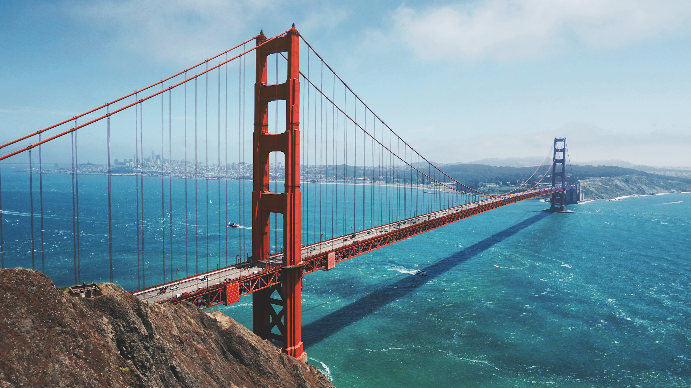

San Francisco
San Francisco (/ˌsæn frənˈsɪskoʊ/; Spanish for "Saint Francis"), officially the City and County of San Francisco, is a commercial, financial, and cultural center of Northern California. The city proper is the fourth most populous in California, with 815,201 residents as of 2021,[22] and covers a land area of 46.9 square miles (121 square kilometers),[23] at the end of the San Francisco Peninsula, making it the second most densely populated large U.S. city after New York City and the fifth most densely populated U.S. county, behind only four of the five New York City boroughs. Among the 91 U.S. cities proper with over 250,000 residents, San Francisco was ranked first by per capita income[24] and sixth by aggregate income as of 2021.[25] Colloquial nicknames for San Francisco include SF, San Fran, The City, Frisco, and Baghdad by the Bay.[26][27][28] San Francisco was founded on June 29, 1776, when Settlers from New Spain established the Presidio of San Francisco at the Golden Gate and Mission San Francisco de Asís a few miles away, both named for Francis of Assisi.[3] The California Gold Rush of 1849 brought rapid growth, transforming an unimportant hamlet into a busy port, making it the largest city on the West Coast at the time; between 1870 and 1900, approximately one quarter of California's population resided in the city proper.[25] In 1856, San Francisco became a consolidated city-county.[29] After three-quarters of the city was destroyed by the 1906 earthquake and fire,[30] it was quickly rebuilt, hosting the Panama-Pacific International Exposition nine years later. In World War II, it was a major port of embarkation for naval service members shipping out to the Pacific Theater.[31] It then became the birthplace of the United Nations in 1945.[32][33][34] After the war, the confluence of returning servicemen, significant immigration, liberalizing attitudes, the rise of the beatnik and hippie countercultures, the sexual revolution, the peace movement growing from opposition to United States involvement in the Vietnam War, and other factors led to the Summer of Love and the gay rights movement, cementing San Francisco as a center of liberal activism in the United States.
London

London's foundation
The city of London was founded by the Romans and their rule extended from 43 AD to the fifth century AD, when the Empire fell. During the third century, Londinium, the name given to the town by the Romans, had a population of 50,000, mainly due to the influence of its major port.As a consequence of repeated Anglo-Saxon invasions during the fifth century, Londinium declined and during the eighth century it became the capital of the Kingdom of Essex.
During the ninth century, the town suffered numerous Viking attacks. As a consequence, Danish settlers established themselves in the area, encouraging trade and opening businesses in the town, transforming it into the first urban centre of England. The town’s wealth and power attracted the Danish Great Heathen Army, which besieged the city until it was captured by King Alfred the Great in 886.
In 1067, following the Norman invasion and conquering of England, the city's existing rights, laws and privileges were established by the newly crowned King of England, William Duke of Normandy. The Tower of London was built during William's reign.
In 1199, King John reinforced the city's self-government, and in 1215 the city could elect a different mayor every year.
For many years, England had no capital city. However, the institutions of central government were moved to Westminster, close to London. This and the rise of trade in the area were two decisive factors in London's emergence as the capital of England.
An ever-growing city During the fourteenth century, London’s port became a European hub for the distribution of goods. This activity was strengthened during the fifteenth century thanks to its relevant textile industry.
From the sixteenth to mid-seventeenth century, London benefited from the centralized politics and the maritime trade expansion developed by the Tudors and continued by the Stuarts. During Henry VIII’s reign London had 100,000 inhabitants. In mid-seventeenth century it had over 500,000.
In 1665, the city was still held inside the ancient walls although large-scale urban planning had already started. The population’s poor living conditions were responsible for the Great Plague, killing 70,000 people, and the following year, a huge fire burnt down most of the city. The reconstruction of London, based on the area we now call "The City", took over 10 years to finish. The architect Christopher Wren’s masterpieces such as St. Paul’s Cathedral increased the appeal of London, and thus the capital became the centre of English social life with palaces, halls, theatres, societies (Royal Society, 1662) and museums (British Museum, 1753).
London continued to grow thanks to the foundation of the Bank of England in 1694. It was the second central bank in the world, rapidly following the Swedish Sveriges Riksbank, and arguably the most successful: it provided the financial flexibility which would be the foundation of the empire's power and whose vestiges can be seen today in London's preeminence as a financial centre.
Most of current London is from the Victorian period. Up until the early years of the nineteenth century, the capital was confined to the boundaries of the original Roman city, as well as Westminster and Mayfair, and was surrounded by fields. Be that as it may, the Industrial Revolution drew millions of people to London, expanding the city. However, the overcrowded conditions led to grave problems like the 1832 cholera epidemics, or the great stink of 1858, an event that took place during the hottest months of the summer, exacerbating the smell of the sewers that were dumped in the River Thames, which led to the suspension of the parliamentary sessions.
From 1750, the population increased from 700,000 to over 4,500,000 in 1901 (6,600,000 if we include the suburban areas). At the end of the nineteenth century, London had become a major international trade and finance capital.
The administrative needs of a city with so much commercial activity led the creation of a new autonomous territorial unit in 1888, the County of London, ruled by the "London county council". This county was divided into twenty-nine electoral units (the city and 28 metropolitan boroughs), but the progressive expansion soon overflowed outside the county boundaries to the suburban areas. After a steady period, the population of the capital began to decline at the end of World War I and fell below 3.5 million by 1950. In contrast, the suburban area grew steadily.
In 1963 a new division of London was made, comprising the old town and 32 metropolitan boroughs, and these are the divisions which can be seen today.
Brexit The most important event in London's recent history was the UK's departure from the European Union. Although the referendum on leaving the EU took place in 2016, the process took some time. The UK officially left the EU on 31st January 2020. A transition period was then established, during which final trade agreements were reached, which ended on 31st December 2020.